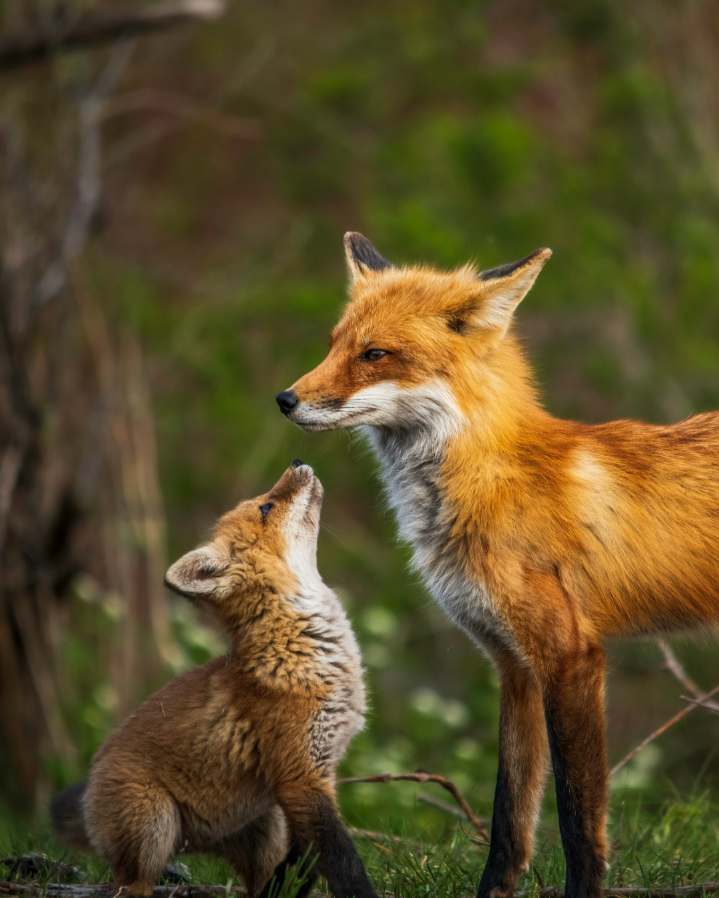
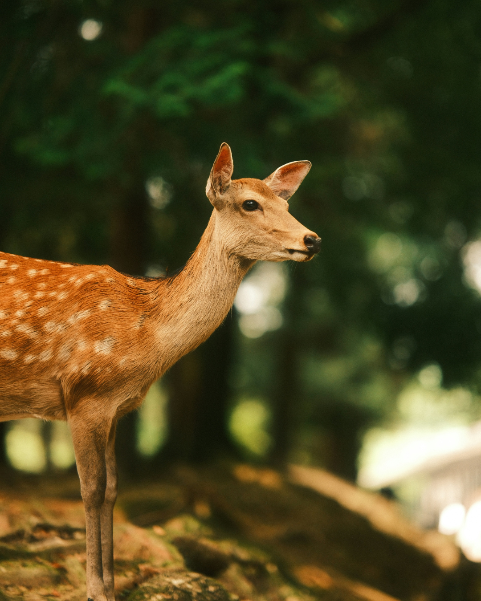
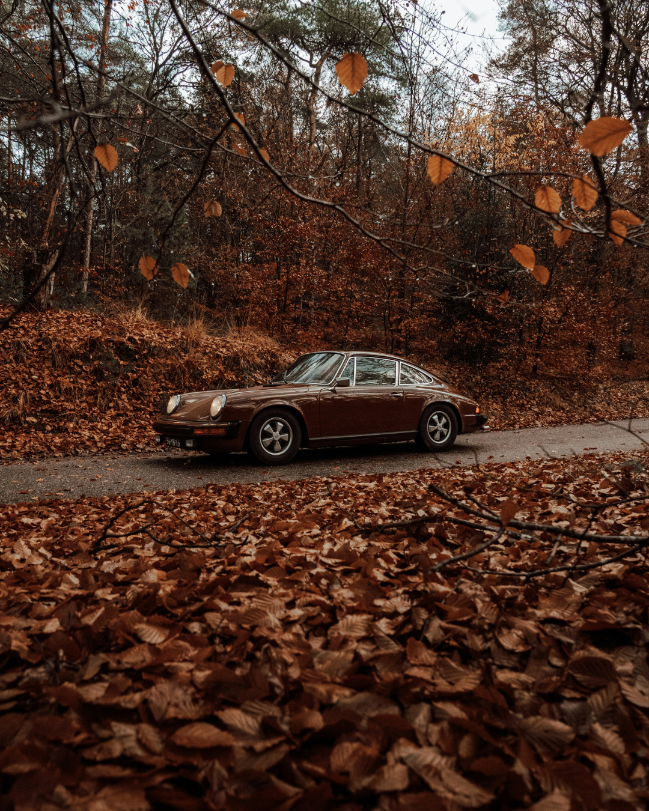
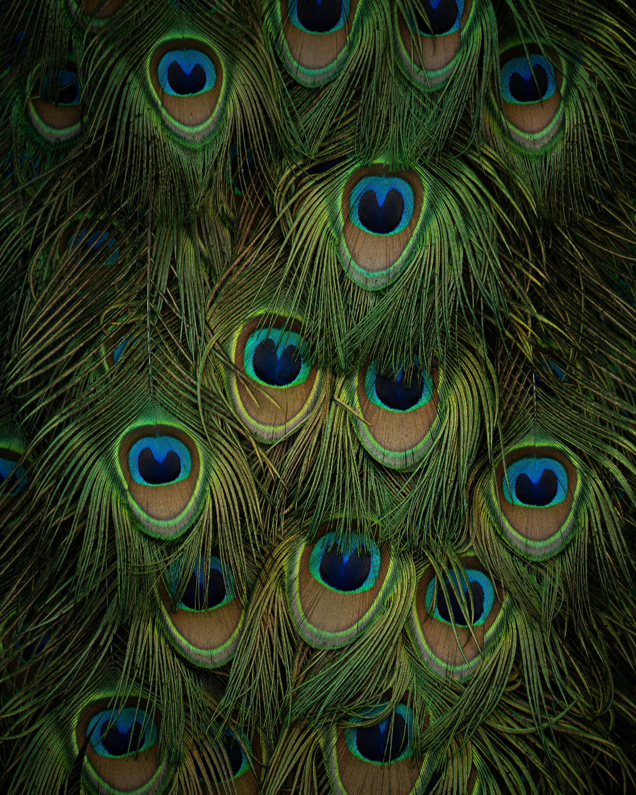

Accessible Carousel
Carousel with Buttons
This carousel allows users to navigate through images using the Previous and Next buttons. It also supports swipe gestures on touch devices and announces slide changes to screen reader users, ensuring better accessibility.




Carousel without Buttons
This carousel allows users to navigate through images using only swipe gestures on touch devices. It announces slide changes to screen reader users. This implementation intentionally fails WCAG 2.5.1 – Pointer Gestures as it requires complex gestures without an alternative input method.